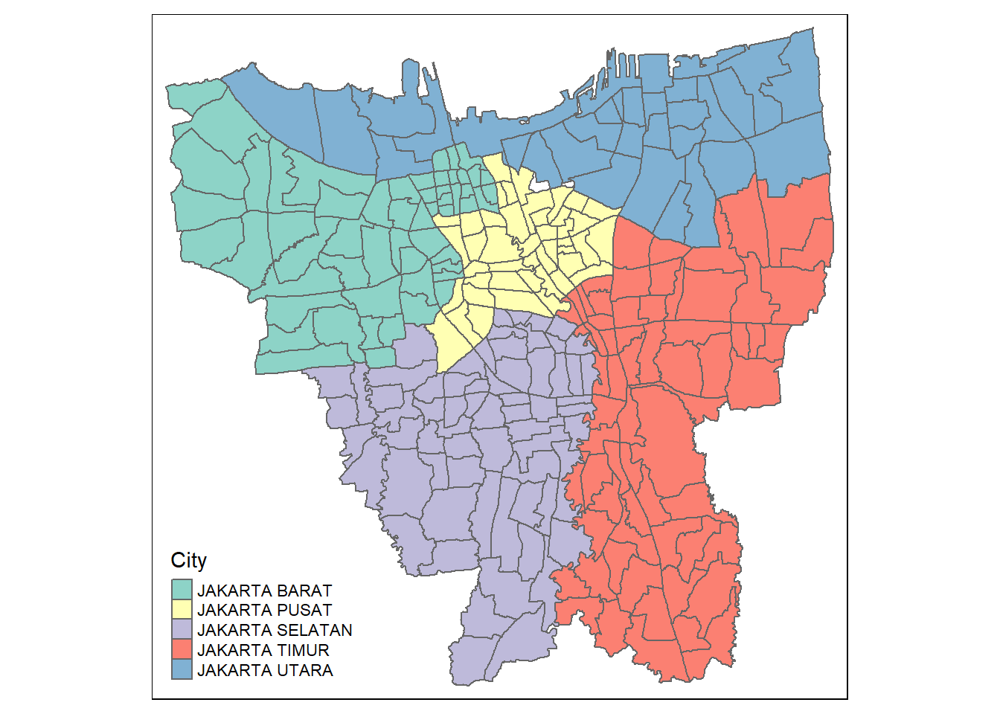

pacman::p_load(tidyverse, funModeling, tmap, sf, sfdep, maptools, raster, spatstat, readxl)Take-Home Exercise 2: Spatio-temporal Analysis of COVID-19 Vaccination Trends at the Sub-district Level, DKI Jakarta
1 Introduction
1.1 Background
Since late December 2019, an outbreak of a novel coronavirus disease (COVID-19; previously known as 2019-nCoV) was reported in Wuhan, China, which had subsequently affected 210 countries worldwide. In general, COVID-19 is an acute resolved disease but it can also be deadly, with a 2% case fatality rate.
The COVID-19 vaccination in Indonesia is an ongoing mass immunisation in response to the COVID-19 pandemic in Indonesia. On 13 January 2021, the program commenced when President Joko Widodo was vaccinated at the presidential palace. In terms of total doses given, Indonesia ranks third in Asia and fifth in the world.
According to wikipedia, as of 5 February 2023 at 18:00 WIB (UTC+7), 204,266,655 people had received the first dose of the vaccine and 175,131,893 people had been fully vaccinated; 69,597,474 of them had been inoculated with the booster or the third dose, while 1,585,164 had received the fourth dose. Jakarta has the highest percentage of population fully vaccinated with 103.46%, followed by Bali and Special Region of Yogyakarta with 85.45% and 83.02% respectively.
Despite its compactness, the cumulative vaccination rate are not evenly distributed within DKI Jakarta. The question is where are the sub-districts with relatively higher number of vaccination rate and how they changed over time.
1.2 Objectives
Exploratory Spatial Data Analysis (ESDA) hold tremendous potential to address complex problems facing society. In this study, you are tasked to apply appropriate Local Indicators of Spatial Association (LISA) and Emerging Hot Spot Analysis (EHSA) to undercover the spatio-temporal trends of COVID-19 vaccination in DKI Jakarta.
1.3 The Task
Choropleth Mapping and Analysis
Compute the monthly vaccination rate from July 2021 to June 2022 at sub-district level
Prepare the monthly vaccination rate maps by using appropriate tmap functions
Describe the spatial patterns revealed by the choropleth maps (not more than 200 words)
Local Gi* Analysis
Compute local Gi* values of the monthly vaccination rate
Display the Gi* maps of the monthly vaccination rate. The maps should only display the significant (i.e. p-value < 0.05)
With reference to the analysis results, draw statistical conclusions (not more than 250 words)
Emerging Hot Spot Analysis (EHSA)
Perform Mann-Kendall Test by using the spatio-temporal local Gi* values
Select three sub-districts and describe the temporal trends revealed (not more than 250 words)
Prepare a EHSA map of the Gi* values of vaccination rate. The maps should only display the significant (i.e. p-value < 0.05)
With reference to the EHSA map prepared, describe the spatial patterns revealed (not more than 250 words)
2 Getting Started
2.1 Importing Modules
The following R packages will be used for this analysis:
tidyverse - Used for data science tasks
funModeling - Used for data cleaning, importance variable analysis and model performance
tmap - Used for creating thematic maps
sf - Used for importing, managing and processing geospatial data
sfdep - Used for geometry neighbours and local indicators of spatial association
maptools - Used for manipulating geographic data
raster - Used to manipulate and models gridded spatial data
spatstat - Used for point pattern analysis
readxl: Used to read Excel into R
2.2 Geospatial Data
2.2.1 Importing Data
geoJAR <- st_read("data/geospatial/",
layer = "BATAS_DESA_DESEMBER_2019_DUKCAPIL_DKI_JAKARTA") %>%
st_transform(crs=26392)Reading layer `BATAS_DESA_DESEMBER_2019_DUKCAPIL_DKI_JAKARTA' from data source
`C:\Users\la935\Desktop\IS415 - GAA\IS415 - GAA (New)\Take-Home_Ex\Take-Home_Ex02\data\geospatial'
using driver `ESRI Shapefile'
Simple feature collection with 269 features and 161 fields
Geometry type: MULTIPOLYGON
Dimension: XY
Bounding box: xmin: 106.3831 ymin: -6.370815 xmax: 106.9728 ymax: -5.184322
Geodetic CRS: WGS 842.2.2 Data Pre-Processing
2.2.2.1 Remove Missing Values
geoJAR[rowSums(is.na(geoJAR))!=0,]Simple feature collection with 2 features and 161 fields
Geometry type: MULTIPOLYGON
Dimension: XY
Bounding box: xmin: 16026250 ymin: -16069470 xmax: 16036970 ymax: -16060460
Projected CRS: Minna / Nigeria Mid Belt
OBJECT_ID KODE_DESA DESA KODE PROVINSI KAB_KOTA KECAMATAN
243 25645 31888888 DANAU SUNTER 318888 DKI JAKARTA <NA> <NA>
244 25646 31888888 DANAU SUNTER DLL 318888 DKI JAKARTA <NA> <NA>
DESA_KELUR JUMLAH_PEN JUMLAH_KK LUAS_WILAY KEPADATAN PERPINDAHA JUMLAH_MEN
243 <NA> 0 0 0 0 0 0
244 <NA> 0 0 0 0 0 0
PERUBAHAN WAJIB_KTP SILAM KRISTEN KHATOLIK HINDU BUDHA KONGHUCU KEPERCAYAA
243 0 0 0 0 0 0 0 0 0
244 0 0 0 0 0 0 0 0 0
PRIA WANITA BELUM_KAWI KAWIN CERAI_HIDU CERAI_MATI U0 U5 U10 U15 U20 U25
243 0 0 0 0 0 0 0 0 0 0 0 0
244 0 0 0 0 0 0 0 0 0 0 0 0
U30 U35 U40 U45 U50 U55 U60 U65 U70 U75 TIDAK_BELU BELUM_TAMA TAMAT_SD SLTP
243 0 0 0 0 0 0 0 0 0 0 0 0 0 0
244 0 0 0 0 0 0 0 0 0 0 0 0 0 0
SLTA DIPLOMA_I DIPLOMA_II DIPLOMA_IV STRATA_II STRATA_III BELUM_TIDA
243 0 0 0 0 0 0 0
244 0 0 0 0 0 0 0
APARATUR_P TENAGA_PEN WIRASWASTA PERTANIAN NELAYAN AGAMA_DAN PELAJAR_MA
243 0 0 0 0 0 0 0
244 0 0 0 0 0 0 0
TENAGA_KES PENSIUNAN LAINNYA GENERATED KODE_DES_1 BELUM_ MENGUR_ PELAJAR_
243 0 0 0 <NA> <NA> 0 0 0
244 0 0 0 <NA> <NA> 0 0 0
PENSIUNA_1 PEGAWAI_ TENTARA KEPOLISIAN PERDAG_ PETANI PETERN_ NELAYAN_1
243 0 0 0 0 0 0 0 0
244 0 0 0 0 0 0 0 0
INDUSTR_ KONSTR_ TRANSP_ KARYAW_ KARYAW1 KARYAW1_1 KARYAW1_12 BURUH BURUH_
243 0 0 0 0 0 0 0 0 0
244 0 0 0 0 0 0 0 0 0
BURUH1 BURUH1_1 PEMBANT_ TUKANG TUKANG_1 TUKANG_12 TUKANG__13 TUKANG__14
243 0 0 0 0 0 0 0 0
244 0 0 0 0 0 0 0 0
TUKANG__15 TUKANG__16 TUKANG__17 PENATA PENATA_ PENATA1_1 MEKANIK SENIMAN_
243 0 0 0 0 0 0 0 0
244 0 0 0 0 0 0 0 0
TABIB PARAJI_ PERANCA_ PENTER_ IMAM_M PENDETA PASTOR WARTAWAN USTADZ JURU_M
243 0 0 0 0 0 0 0 0 0 0
244 0 0 0 0 0 0 0 0 0 0
PROMOT ANGGOTA_ ANGGOTA1 ANGGOTA1_1 PRESIDEN WAKIL_PRES ANGGOTA1_2
243 0 0 0 0 0 0 0
244 0 0 0 0 0 0 0
ANGGOTA1_3 DUTA_B GUBERNUR WAKIL_GUBE BUPATI WAKIL_BUPA WALIKOTA WAKIL_WALI
243 0 0 0 0 0 0 0 0
244 0 0 0 0 0 0 0 0
ANGGOTA1_4 ANGGOTA1_5 DOSEN GURU PILOT PENGACARA_ NOTARIS ARSITEK AKUNTA_
243 0 0 0 0 0 0 0 0 0
244 0 0 0 0 0 0 0 0 0
KONSUL_ DOKTER BIDAN PERAWAT APOTEK_ PSIKIATER PENYIA_ PENYIA1 PELAUT
243 0 0 0 0 0 0 0 0 0
244 0 0 0 0 0 0 0 0 0
PENELITI SOPIR PIALAN PARANORMAL PEDAGA_ PERANG_ KEPALA_ BIARAW_ WIRASWAST_
243 0 0 0 0 0 0 0 0 0
244 0 0 0 0 0 0 0 0 0
LAINNYA_12 LUAS_DESA KODE_DES_3 DESA_KEL_1 KODE_12
243 0 0 <NA> <NA> 0
244 0 0 <NA> <NA> 0
geometry
243 MULTIPOLYGON (((16026561 -1...
244 MULTIPOLYGON (((16030782 -1...geoJAR <- na.omit(geoJAR,c("DESA_KELUR"))2.2.2.2 Transform Coordinate System
st_crs(geoJAR)Coordinate Reference System:
User input: EPSG:26392
wkt:
PROJCRS["Minna / Nigeria Mid Belt",
BASEGEOGCRS["Minna",
DATUM["Minna",
ELLIPSOID["Clarke 1880 (RGS)",6378249.145,293.465,
LENGTHUNIT["metre",1]]],
PRIMEM["Greenwich",0,
ANGLEUNIT["degree",0.0174532925199433]],
ID["EPSG",4263]],
CONVERSION["Nigeria Mid Belt",
METHOD["Transverse Mercator",
ID["EPSG",9807]],
PARAMETER["Latitude of natural origin",4,
ANGLEUNIT["degree",0.0174532925199433],
ID["EPSG",8801]],
PARAMETER["Longitude of natural origin",8.5,
ANGLEUNIT["degree",0.0174532925199433],
ID["EPSG",8802]],
PARAMETER["Scale factor at natural origin",0.99975,
SCALEUNIT["unity",1],
ID["EPSG",8805]],
PARAMETER["False easting",670553.98,
LENGTHUNIT["metre",1],
ID["EPSG",8806]],
PARAMETER["False northing",0,
LENGTHUNIT["metre",1],
ID["EPSG",8807]]],
CS[Cartesian,2],
AXIS["(E)",east,
ORDER[1],
LENGTHUNIT["metre",1]],
AXIS["(N)",north,
ORDER[2],
LENGTHUNIT["metre",1]],
USAGE[
SCOPE["Engineering survey, topographic mapping."],
AREA["Nigeria between 6°30'E and 10°30'E, onshore and offshore shelf."],
BBOX[3.57,6.5,13.53,10.51]],
ID["EPSG",26392]]geoJAR23845 <- st_set_crs(geoJAR, 23845)st_crs(geoJAR23845)Coordinate Reference System:
User input: EPSG:23845
wkt:
PROJCRS["DGN95 / Indonesia TM-3 zone 54.1",
BASEGEOGCRS["DGN95",
DATUM["Datum Geodesi Nasional 1995",
ELLIPSOID["WGS 84",6378137,298.257223563,
LENGTHUNIT["metre",1]]],
PRIMEM["Greenwich",0,
ANGLEUNIT["degree",0.0174532925199433]],
ID["EPSG",4755]],
CONVERSION["Indonesia TM-3 zone 54.1",
METHOD["Transverse Mercator",
ID["EPSG",9807]],
PARAMETER["Latitude of natural origin",0,
ANGLEUNIT["degree",0.0174532925199433],
ID["EPSG",8801]],
PARAMETER["Longitude of natural origin",139.5,
ANGLEUNIT["degree",0.0174532925199433],
ID["EPSG",8802]],
PARAMETER["Scale factor at natural origin",0.9999,
SCALEUNIT["unity",1],
ID["EPSG",8805]],
PARAMETER["False easting",200000,
LENGTHUNIT["metre",1],
ID["EPSG",8806]],
PARAMETER["False northing",1500000,
LENGTHUNIT["metre",1],
ID["EPSG",8807]]],
CS[Cartesian,2],
AXIS["easting (X)",east,
ORDER[1],
LENGTHUNIT["metre",1]],
AXIS["northing (Y)",north,
ORDER[2],
LENGTHUNIT["metre",1]],
USAGE[
SCOPE["Cadastre."],
AREA["Indonesia - onshore east of 138°E."],
BBOX[-9.19,138,-1.49,141.01]],
ID["EPSG",23845]]2.2.3 Data Visualisation
plot(st_geometry(geoJAR23845))
2.2.3.1 Retain Relavant Columns
geoJAR23845 <- geoJAR23845 %>%
dplyr::select(c(1:9))2.2.3.2 Removing Outer Islands
jar_main <- geoJAR23845 %>%
filter(KAB_KOTA %in%
c("JAKARTA BARAT",
"JAKARTA PUSAT",
"JAKARTA UTARA",
"JAKARTA SELATAN",
"JAKARTA TIMUR"))2.2.3.3 Renaming Columns
jar_main <- jar_main %>%
dplyr::rename(
object_id = OBJECT_ID,
province = PROVINSI,
city = KAB_KOTA,
district = KECAMATAN,
village_code = KODE_DESA,
village = DESA,
sub_district = DESA_KELUR,
code = KODE,
total_population = JUMLAH_PEN
)glimpse(jar_main)Rows: 261
Columns: 10
$ object_id <dbl> 25477, 25478, 25397, 25400, 25390, 25391, 25394, 2538…
$ village_code <chr> "3173031006", "3173031007", "3171031003", "3171031006…
$ village <chr> "KEAGUNGAN", "GLODOK", "HARAPAN MULIA", "CEMPAKA BARU…
$ code <dbl> 317303, 317303, 317103, 317103, 317102, 317102, 31710…
$ province <chr> "DKI JAKARTA", "DKI JAKARTA", "DKI JAKARTA", "DKI JAK…
$ city <chr> "JAKARTA BARAT", "JAKARTA BARAT", "JAKARTA PUSAT", "J…
$ district <chr> "TAMAN SARI", "TAMAN SARI", "KEMAYORAN", "KEMAYORAN",…
$ sub_district <chr> "KEAGUNGAN", "GLODOK", "HARAPAN MULIA", "CEMPAKA BARU…
$ total_population <dbl> 21609, 9069, 29085, 41913, 15793, 33383, 35906, 21828…
$ geometry <MULTIPOLYGON [m]> MULTIPOLYGON (((16048419 -1..., MULTIPOL…2.2.3.4 Checking Map
tm_shape(jar_main) +
tm_polygons("city")
2.3 Aspatial Data
2.3.1 Importing Data
vaccinated <- list()
list <- list.files(path = "data/aspatial/", pattern = "*.xlsx")
setwd("data/aspatial/")
for (i in 1:length(list)){
vaccinated[i] <- lapply(list[i], FUN = read_excel)
}